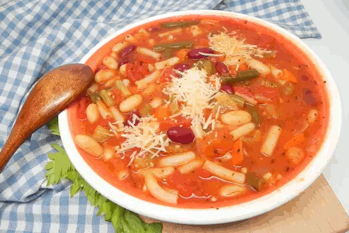

Hearty Vegetarian Minestrone

Description
This vegetarian minestrone is a simple and hearty soup for those cold days.
Serve with a Caesar salad and garlic toast and you have a simple, nutritious meal.
Ingredients
- 2 tablespoons extra-virgin olive oil
- 1 large onion, diced
- 4 cloves garlic, minced
- 3 large carrots, diced
- 4 stalks celery, diced
- ½ (10 ounce) package frozen cut green beans
- 1 teaspoon dried oregano
- 1 teaspoon dried basil
- salt and ground black pepper to taste
- 1 (28 ounce) can diced tomatoes
- 1 (14 ounce) can crushed tomatoes
- 6 cups vegetable broth
- ¼ cup water, or as needed
- 1 (15 ounce) can kidney beans, rinsed and drained
- 1 (15 ounce) can cannellini beans, drained and rinsed
- 1 cup elbow macaroni
- ⅓ cup vegan shredded Parmesan-style cheese
- 2 tablespoons chopped fresh basil
Instructions
- Heat olive oil in a large pot over medium heat.
Add onion and cook until soft, about 3 minutes.
Add garlic and cook until fragrant, about 1 minute.
Add carrots and celery; cook and stir until soft, 5 to 6 minutes.
- Stir in green beans, oregano, basil, salt, and pepper; cook for about 5 minutes.
Add diced and crushed tomatoes and vegetable broth; bring to a boil.
If it looks too thick, add a bit of water.
- Reduce heat to low and simmer for 20 minutes.
Stir in kidney beans, cannellini beans, and macaroni; cook until pasta is tender yet firm to the bite, 7 to 10 minutes.
Taste and adjust salt and pepper, if needed.
-
Ladle into bowls and garnish with Parmesan-style cheese and fresh basil.
Nutrition Facts
Per Serving: 293 calories; protein 11.9g; carbohydrates 44.6g; fat 7.6g; sodium 893.2mg.